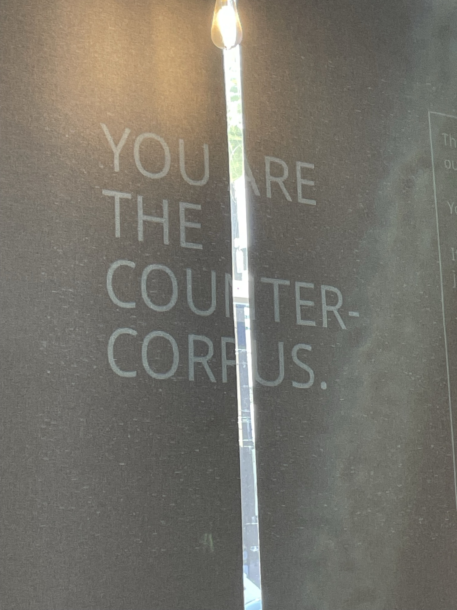
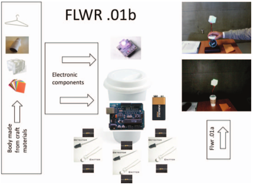
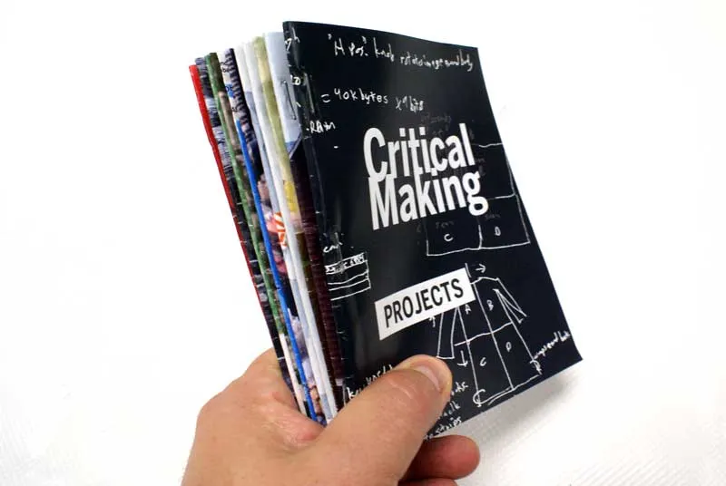
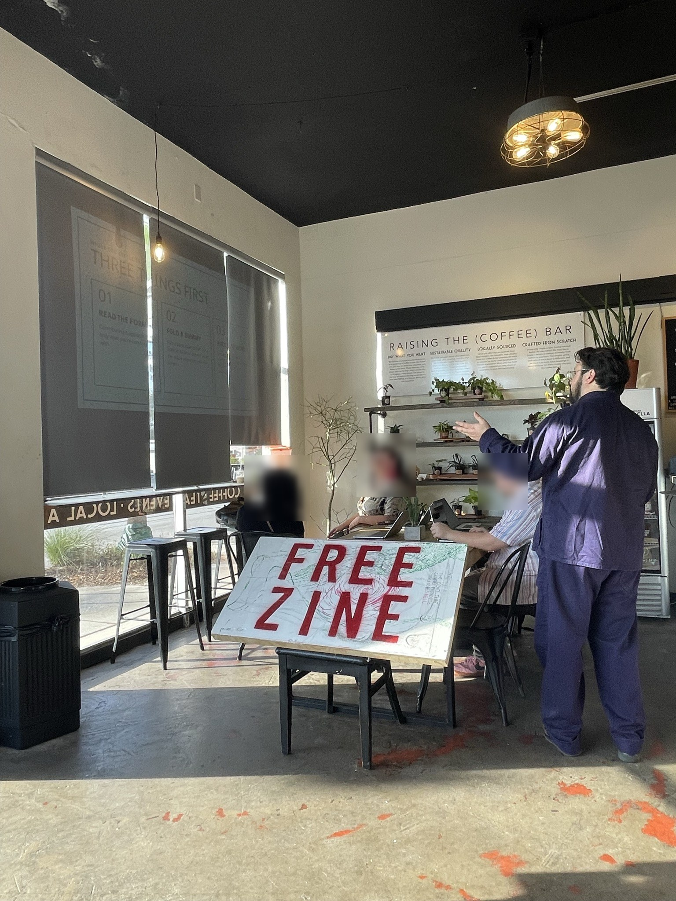

Critical Making
Glenn S. Ritchey III · Texts & Technology, UCF

Free-write: 2 minutes
Open the sheet: glennritchey.net/tandt/diss-design/worksheet/
What are your experiences with critical making? Is there any place in your own work for the convergence of critical thinking and creative making?
Your writing stays in your own browser. Keep the sheet open: it comes back at the end.
A preliminary history: Kamĩrĩĩthũ
- At the Kamĩrĩĩthũ community theatre, the play was shaped collectively: villagers contributed their own language, songs, and histories.
- The playwrights' authority was one voice among many.
- The community makes from its own cultural archive instead of having it decoded for it.
- Kamĩrĩĩthũ was suppressed by the state, and Ngũgĩ was detained. It is an example, not a metaphor.
Ngũgĩ wa Thiong'o, “The Language of African Theatre,” Decolonising the Mind (1988)
What critical making is
“to use material forms of engagement with technologies to supplement and extend critical reflection and, in doing so, to reconnect our lived experiences with technologies to social and conceptual critique” (Ratto 253)
“rather than being purposive or fully functional devices, prototype development is used to extend knowledge and skills in relevant technical areas as well as to provide the means for conceptual exploration” (Ratto 253)

Where it's used, and what to watch for
- Fields: STS and information studies (Ratto); technology and society / engineering pedagogy (Mann); digital humanities (Smithies); DH methodologies and pedagogy (Johnson & Salter)
- Strength: understanding comes through the making: “joint conceptual and materially productive work” (Ratto 258)
- Where I'm continuing to build:
- the theory–technology mapping can turn reductive (Ratto 257)
- “not a model for general use”: upkeep, one maker's skills, platform dependence (Smithies)
- the purpose can look opaque to colleagues (Smithies)
- AI handled expediently: one optional prompt, not a full module (Johnson & Salter)
- Considerations: positionality (who counts as an insider), keeping the steps visible, maintenance

Four studies that made things
Ratto (2011): flwr
Networked “flwrs” set to a gift economy; when most only listened, the network “died,” and the talk turned to reciprocity.
Mann (2014): maktivism
Students hack dumpster computers and ID readers; the “Griefcase” makes a guard who wants to search it give up his own fingerprints.
Smithies (2017): Full Stack DH
A personal research environment on a Raspberry Pi: control of the whole stack, yet still dependent on Amazon, and still needing care.
Johnson & Salter (2025): “Generation”
Students regenerate their own assignments with ChatGPT and critique the output.
Tensions
- Authentic maker vs. “poseur” (Mann) ↔ when does “insider” become a credential check?
- A lone scholar's stack (Smithies) ↔ community making: DIY or “do it together” (Mann)
- Control vs. dependence: Smithies still runs on Amazon. “Any facade of purity … is compromised.”
- Platform vs. local: the book points to ChatGPT as the easy way in
The future of critical making: (un)making
Johnson & Salter's talk (paraphrased)
- Agentic tools risk becoming another walled garden, and they can also build alternatives to one
- Nowviskie's resistances in the materials, plus a fourth loss: control over the steps, sold as convenience
- Unmake the agent: reject, supplement, extend, critique
- Maintenance is resistance
- Their example: Leonardo Flores used Claude Code to move twenty years of sites off WordPress into static HTML, “a corporate tool to produce something that doesn't depend on corporate tools to function”
Where distant making meets it
- Keep the steps: small, inspectable processes first, local models where those fall short
- The further along that gradient, the more I owe an account of what the process did
- Build tools that carry production knowledge to people rather than hiding it behind templates
Johnson and Salter, “Critical (Un)Making and the Agentic Humanities: A Talk in Four Crafts” (2026) · Flores, “A Farewell to Wordpress” (2026)
Distant making, from practice
“my distance is a matter of choice” (Ritchey, “What Ziner is Talking About”)
Ziner
Critical making as prototyping (Ratto). A zine tool for FYC and the Ephemera Eternal workshop; its iterations stay visible in the commit history.
Distant making
An insider steps back from an archive they know closely and makes something new from the whole, using processes they can see into.
Recoding
Workshops: participants make from their own cultural data sets; interviews ask what the making decoded (Hall).

Back to your sheet
Reread your free-write. Then write your “after.”
With these moves in mind, return to what you wrote. What would you now count as critical making in your own work? Which tension does your work already sit inside, and what would it take to make something whose steps stay visible?
Discussion
- What could you make, instead of write, that would test a claim in your own research? What might the making show that the writing can't?
- Kamĩrĩĩthũ let a community make from its own archive. Who are the insiders to the materials you study, and what would change if they did the making instead of you?
- Flores used a corporate tool to build something that doesn't depend on corporate tools. Where is your line between using a platform and depending on it, and what do you owe your readers about a process you can't fully see into?